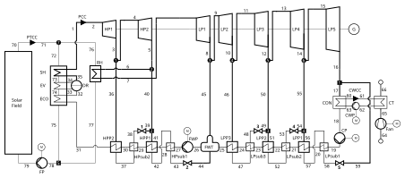
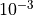
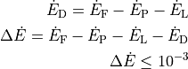
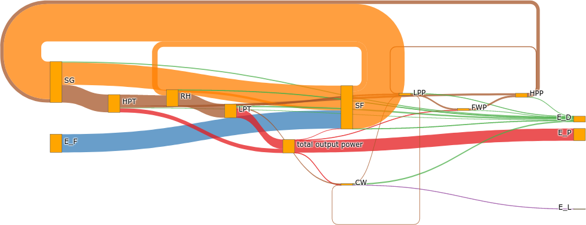

Thermodynamic analyses¶
Performing thermodynamic cycle analyses making use of the second law of thermodynamics provides further process information and uncovers potentials for improvement in power plant engineering. Therefore, TESPy’s analyses module provides you with an inbuilt and fully automatic exergy analysis. Adding entropy analysis is planned for the future.
Contents
Exergy analysis¶
Fundamentals of exergy analysis¶
Energy is a concept of the first law of thermodynamics. It cannot be destroyed. But regarding the design and analysis of thermal systems, the idea that something can be destroyed is useful. According to the second law of thermodynamics, the conversion of heat and internal energy into work is limited. This constraint and the idea of destruction are applied to introduce a new concept: “Exergy”.
Exergy can be destroyed due to irreversibilities and is able to describe the quality of different energy forms. The difference in quality of different forms of energy shall be illustrated by the following example. 1 kJ of electrical energy is clearly more valuable than 1 kJ of energy in a glass of water at ambient temperature [BTM96].
In literature, exergy is defined as follows:
“An opportunity for doing useful work exists whenever two systems at different states are placed in communication, for in principle work can be developed as the two are allowed to come into equilibrium. When one of the two systems is a suitably idealized system called an environment and the other is some system of interest, exergy is the maximum theoretical useful work (shaft work or electrical work) obtainable as the systems interact to equilibrium, heat transfer occuring with the environment only.” [BTM96]
Terminology¶
The definitions and nomenclature of the exergy analysis in TESPy are based on [Tsa07]. The exergy destruction ratios are described in more detail in [BTM96]. Since the current version of the exergy analysis in TESPy only focuses on physical exergy and does not include reaction processes yet, chemical exergy is not considered. Changes in kinetic and potential exergy are neglected and therefore not considered as well.
Note
The generic exergy analysis balance equations have been implemented into TESPy for all components, that do not implement chemical reactions. The equations for exergy balances at temperature values below the ambient temperature are implemented as well, but are not yet fully tested.
Tutorial¶
In this short tutorial, an exergy analysis is carried out for the so called “Solar Energy Generating System” (SEGS). The full python script is available on GitHub in an individual repository: https://github.com/fwitte/SEGS_exergy.
Two other full code examples are to be found at:
Supercritical CO2 power cycle: https://github.com/fwitte/sCO2_exergy
Refrigeration machine: https://github.com/fwitte/refrigeration_cycle_exergy
SEGS consists of three main systems, the solar field, the steam cycle and the cooling water system. In the solar field Therminol VP1 is used as heat transfer fluid. In the steam generator and reheater the TVP1 is cooled down to evaporate and overheat/reheat the water of the steam cycle. The turbine is divided in a high pressure turbine and a low pressure turbine, which are further subdivided in 2 parts (high pressure turbine) and 5 parts. In between the stages steam is exctracted for preheating. Finally, the main condenser of the steam cycle is connected to an air cooling tower. The figure below shows the topology of the model.

The input data are based on literature [KM88], which provides measured data. Some parameters are however taken from a follow-up publication, as the original data show some inconsistencies, e.g. higher enthalpy at the low pressure turbine’s last stage outlet than at its inlet [Lip95]. As mentioned, you can find all data in the respective GitHub repository.
TESPy model¶
The TESPy model consists of 53 components. The feed water tank serves as mixing
preheater, thus can be modeled using a merge. All other components are modeled
highlighted in the flowsheet. The preheaters and the main condenser are modeled
as Condenser instances, while all other heat exchangers are modeled
using HeatExchanger instances. For the solar field a parabolic trough
is implemented, calculating the surface area required for the provision of the
heat input at optimal conditions.
All components are flagged with the fkt_group parameter, which will
automatically create functional groups (component groups) for the exergy
analysis Grassmann diagram. The specification of this parameter is not required
for the exergy analysis itself, but helps to simplify the automatically
generated diagram. Components not assigned to any functional group will form
their respective group.
Regarding parameter specification, the following parameters are specified:
isentropic efficiency values
electrical conversion efficiencies of motors and generators
terminal temperature difference values at preheaters
pressure values of steam extraction
pressure values in the preheating route
pressure losses in the heat exchangers
solar fluid temperature
steam cycle live steam and reheat temperatures
some temperature values in the cooling water system
The ambient state is defined as follows:
pamb = 1.013
Tamb = 25
Pressure and temperature of the ambient air in the cooling tower are equal to these values in the script provided.
For the exact values of the component parameters please see in the referenced python script.
Due to the complexity of the plant, the solver sometimes struggles given bad starting values. Therefore, the TESPy model is built in two steps. After solving the initial setup without both of the high pressure preheater subcoolers, the missing connections and components are added in a second step and the model is again solved.
Analysis setup¶
After the simulation of the plant, the exergy analysis can be carried out. To perform it, all exergy streams leaving or entering the network’s system boundaries have to be defined by the user. These are:
fuel exergy
E_Fproduct exergy
E_Pexergy loss streams
E_Linternal exergy streams not bound to connections
internal_busses
In case of the solar thermal power plant, the fuel exergy is the heat input at the parabolic trough. The product is the electricity produced by the plant, i.e. the electricity generated by the turbine generators minus the electricity consumed by the pumps and the fan. Lastly, exergy loss streams are the hot air leaving the cooling tower and the cold air entering the cooling tower fan from the ambient. Similar to the electricity consumption of the fan and pumps the cold air will be taken into account as negative value for the total exergy loss.
power = Bus('total output power')
power.add_comps({'comp': hpt1, 'char': 0.97, 'base': 'component'},
{'comp': hpt2, 'char': 0.97, 'base': 'component'},
{'comp': lpt1, 'char': 0.97, 'base': 'component'},
{'comp': lpt2, 'char': 0.97, 'base': 'component'},
{'comp': lpt3, 'char': 0.97, 'base': 'component'},
{'comp': lpt4, 'char': 0.97, 'base': 'component'},
{'comp': lpt5, 'char': 0.97, 'base': 'component'},
{'comp': fwp, 'char': 0.95, 'base': 'bus'},
{'comp': condpump, 'char': 0.95, 'base': 'bus'},
{'comp': ptpump, 'char': 0.95, 'base': 'bus'},
{'comp': cwp, 'char': 0.95, 'base': 'bus'},
{'comp': fan, 'char': 0.95, 'base': 'bus'})
heat_input_bus = Bus('heat input')
heat_input_bus.add_comps({'comp': pt, 'base': 'bus'})
exergy_loss_bus = Bus('exergy loss')
exergy_loss_bus.add_comps({'comp': air_in, 'base': 'bus'}, {'comp': air_out})
SEGSvi.add_busses(power, heat_input_bus, exergy_loss_bus)
In order to define these values a list of busses representing the individual exergy streams is passed when creating the ExergyAnalysis instance.
ean = ExergyAnalysis(SEGSvi, E_P=[power], E_F=[heat_input_bus], E_L=[exergy_loss_bus])
In this case, the Bus power represents the product exergy, the Bus
heat_input_bus the fuel exergy of the solar field and the Bus
exergy_loss_bus the exergy lost with the hot air leaving the cooling
tower. An example application using the internal_busses can be found in
the API documentation of class tespy.tools.analyses.ExergyAnalysis.
After the setup of the exergy analysis, the
tespy.tools.analyses.ExergyAnalysis.analyse() method expects the
definition of the ambient state, thus ambient temperature and ambient pressure.
With these information, the analysis is carried out automatically. The value
of the ambient conditions is passed in the network’s (nw) corresponding
units.
ean.analyse(pamb=pamb, Tamb=Tamb)
Using the same tespy.tools.analyses.ExergyAnalysis instance, it is
possible to run the analysis again with a different ambient state. The data
generated by the analysis will automatically update, e.g. changing the ambient
state temperature value to 15 °C.
ean.analyse(pamb=pamb, Tamb=15)
Note
If the network’s topology changed a new instance of the
ExergyAnalysis class needs to be defined.
Checking consistency¶
An automatic check of consistency is performed by the analysis. The sum of all exergy destruction values of the network’s components and the exergy destruction on the respective busses is calculated. On top of that, fuel and product exergy values as well as exergy loss are determined. The total exergy destruction must therefore be equal to the fuel exergy minus product exergy and minus exergy loss. The deviation of that equation is then calculated and checked versus a threshold value of

(to componesate for rounding errors).
Note
If the exergy analysis is carried out on a converged simulation and the analysis is set up correctly, this equation must be True. Otherwise, an error will be printed to the console, which means:
The simulation of your plant did not converge or
the exergy analysis has not been set up correctly. You should check, if the definition of the exergy streams
E_F,E_P,E_Landinternal_bussesis correct.
If you suspect a bug in the calculation, you are welcome to submit an issue on our GitHub page.
Printing the results is possible with the
tespy.tools.analyses.ExergyAnalysis.print_results() method. The
results are printed in six individual tables:
connections
components
busses
aggregation (aggregation of components and the respective busses)
network
groups (functional groups)
By default, all of these tables are printed to the prompt. It is possible to
deselect the tables, e.g. by passing groups=False to the method call.
ean.print_results(groups=False, connections=False)
For the component related tables, i.e. busses, components, aggregation and groups, the data are sorted descending regarding the exergy destruction value of the individual entry. The component data contain fuel exergy, product exergy and exergy destruction values related to the component itself ignoring losses that might occur on the busses, for example, mechanical or electrical conversion losses in motors and generators. The bus data contain the respective information related to the conversion losses on the busses only. The aggregation data contain both, the component and the bus data. For instance, a turbine driving a generator will have the electrical energy delivered by the generator as product exergy value. The same component’s exergy product without considering the mechanical or electrical conversion losses is the shaft power delivered by the turbine. From the generator’s perspective, this is the fuel exergy, while the product is the electrical energy.
Note
Please note, that in contrast to the component and bus data, group data do not contain fuel and product exergy as well as exergy efficiency. Instead all exergy streams entering the system borders of the component group and all exergy streams leaving the system borders are calculated. On this basis, a graphical representation of the exergy flows in the network can be generated in the form of a Grassmann diagram.
Accessing the data¶
The underlying data for the tabular printouts are stored in pandas DataFrames. Therefore, you can easily access and process these data. To access these use the following code snippet.
connection_data = ean.connection_data
bus_data = ean.bus_data
component_data = ean.component_data
aggregation_data = ean.aggregation_data
network_data = ean.network_data
group_data = ean.group_data
Lastly, the analysis also provides an input data generator for plotly’s sankey diagram.
Plotting¶
To use the plotly library, you’ll need to install it first. Please check the respective documentation on plotly’s documentation. Generating a sankey diagram is then easily done:
import plotly.graph_objects as go
links, nodes = ean.generate_plotly_sankey_input()
fig = go.Figure(go.Sankey(
arrangement='snap',
node={
'label': nodes,
'pad':11,
'color': 'orange'},
link=links))
fig.show()

The tespy.tools.analyses.ExergyAnalysis.generate_plotly_sankey_input()
method provides the links and the corresponding nodes for the diagram. Colors
and node order are assigned automatically but can be changed. Additionally, a
threshold value for the minimum value of an exergy stream can be specified to
exclude relatively small values from display.
ean.generate_plotly_sankey_input(
node_order=[
'E_F', 'heat input', 'SF', 'SG', 'LPT', 'RH', 'HPT',
'total output power', 'CW', 'LPP', 'FWP', 'HPP', 'exergy loss',
'E_L', 'E_P', 'E_D'
],
colors={'E_F': 'rgba(100, 100, 100, 0.5)'},
display_thresold=1)
The coloring of the links is defined by the type of the exergy stream (bound to a specific fluid, fuel exergy, product exergy, exergy loss, exergy destruction or internal exergy streams not bound to mass flows). Therefore colors can be assigned to these types of streams.
Note
The
node_ordermust contain all exergy streams, thusALL component group labels (you can find the labels in the group data results printout),
lables of the busses used in the definitions of the analysis and
'E_F','E_P','E_D'as well as'E_L'
The colors dictionary works with the following keys:
'E_F','E_P','E_D','E_L'all labels of the busses used in the definition of the internal exergy streams
all names of the network’s fluid
'mix'for any mixture of two or more fluids
Keys missing in the dictionary will automatically assign a color to the link.
The respective value are strings representing colors in the RGBA format, e.g.
'rgba(100, 100, 100, 0.5)'.
Note
Links with negative exergy flow, i.e. when the value of mechanical exergy is negative due to pressure lower than ambient pressure and total exergy is still negative, cannot be displayed by the sankey diagram.
The underlying exergy stream data is saved in a dictionary, if you want to handle the data by yourself.
sankey_data = ean.sankey_data
Conclusion¶
An additional example is available in the API documentation of the
tespy.tools.analyses.ExergyAnalysis class. Full testing of exergy
analysis at temperature levels below the ambient temperature will be
implemented soon. Regarding the implementation of chemical exergy as well as
exergo-economical methods, further work is required. If you are interested in
contributing, please file an issue at our GitHub page.